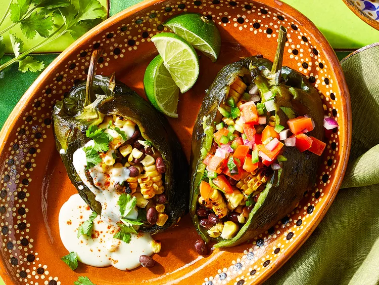

Grilled Stuffed Poblanos

Fire up dinnertime with these grilled vegetarian stuffed poblano peppers that benefit
from charred, smoky flavors. Invite vegans and omnivores to the cookout, too—this recipe
can flex to feed everyone.
RECIPES:
8 poblano peppers
5 ears corn, husks and silks removed
1 (15-ounce can) no-salt-added black beans, drained and rinsed
1/4 cup chopped fresh cilantro
1 tablespoon chopped fresh oregano
2 cloves garlic, minced
1 teaspoon salt
1 teaspoon ground cumin
1/4 teaspoon black pepper
2 tablespoons butter
2 tablespoons flour
1 cup milk
1 cup shredded pepper Jack cheese
1 cup pico de gallo
cilantro leaves, lime wedges, and/or radish slices, for serving (optional)
chili powder, for garnish
STEPS:
1. Prepare an outdoor grill for indirect grilling, lighting burners
on just one side or pushing lit coals to one side. Preheat to medium-high
heat(375 to 400 degrees F (180 to 200 degrees C)). Lightly oil grill grates
over lit side.
2. Grill poblanos and corn, covered, turning occasionally, until poblano
skins and corn are charred, about 10 minutes. Keep grill lit.
3. Transfer poblanos to a large bowl, cover, and let stand for 10 minutes.
Meanwhile, let corn stand until cool enough to handle; cut kernels from cobs.
4. Remove and discard poblano skins, keeping stems intact. Make a lengthwise slit
down one side of each poblano, starting at stem and being careful not to cut
through to other side. Remove and discard seeds and membranes.
5. Stir together beans, corn kernels, cilantro, oregano, garlic, salt, cumin, and
black pepper in a large bowl. Spoon about 1/2 cup bean mixture into each pepper,
enclosing pepper around the filling.
6. For the cheese sauce, melt butter in a small saucepan over medium-low heat;
whisk in flour. Cook, stirring until lightly browned, 1 to 2 minutes. Whisk in
milk; simmer, stirring, until slightly thickened, 2 to 3 minutes. Gradually whisk
in cheese until melted. Remove from heat and keep warm, stirring occasionally.
7. Lightly oil grill grate over unlit side of grill. Grill stuffed poblanos,
covered, until filling is heated through, 5 to 7 minute
8. Serve immediately with cheese sauce; pico de gallo; and (if using) cilantro,
lime wedges, and/or radishes. Garnish with chili powder.